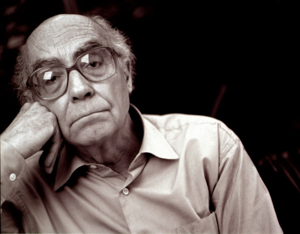
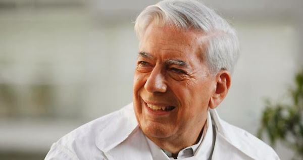
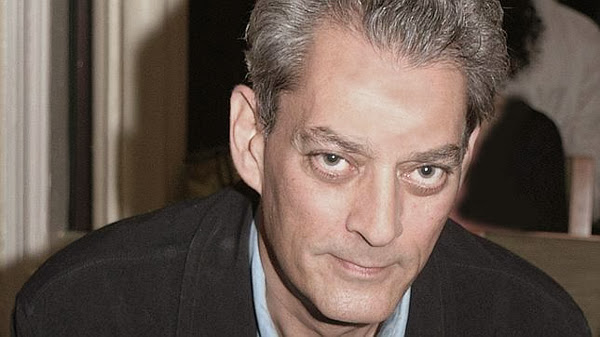
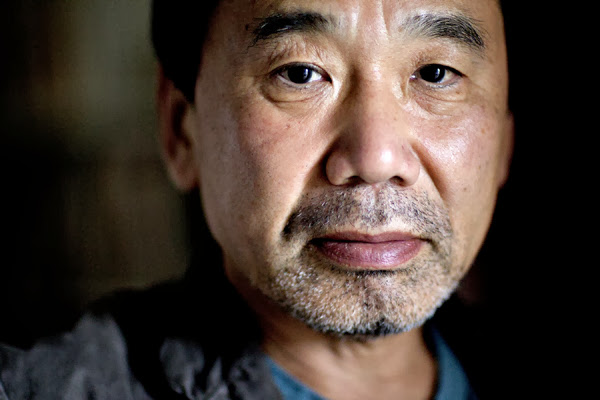

JOSÉ SARAMAGO
José de Sousa Saramago nació en Azinhaga, Santarém (Portugal) el 16 de Noviembre de 1922 y falleció en Tías, Lanzarote (España) el 18 de Junio de 2010. Fue un escritor, novelista, poeta, periodista y dramaturgo portugués. En 1998 se le otorgó el Premio Nobel de Literatura. La Academia Sueca destacó su capacidad para «volver comprensible una realidad huidiza, con parábolas sostenidas por la imaginación, la compasión y la ironía».
MARIO VARGAS LLOSA
Jorge Mario Pedro Vargas Llosa nació en Arequipa el 28 de Marzo de 1936. I marqués de Vargas Llosa, conocido como Mario Vargas Llosa, es un escritor peruano, que desde 1993 cuenta también con la nacionalidad española. Uno de los más importantes novelistas y ensayistas contemporáneos, su obra ha cosechado numerosos premios, entre los que destacan el Príncipe de Asturias de las Letras 1986 y el Nobel de Literatura 2010, el Cervantes (1994), el Planeta (1993), el Biblioteca Breve (1963), el Rómulo Gallegos (1967), entre otros. Desde 2011 recibe el tratamiento protocolar de Ilustrísimo Señor por ser marqués. Al igual que otros autores latinoamericanos, ha participado en política, siendo defensor de las ideas liberales. Fue candidato a la presidencia del Perú en las elecciones de 1990 por la coalición política de centroderecha Frente Democrático (Fredemo).
PAUL AUSTER
Paul Auster nació en Newark (Nueva Jersey) el 3 de Febrero de 1947. Es un escritor, guionista y director de cine estadounidense, Premio Príncipe de Asturias de las Letras 2006.
HARUKI MURAKAMI
Haruki Murakami nació en Kioto el 12 de Enero de 1949. Es un escritor y traductor japonés autor de novelas y relatos. Sus obras de ficción y no ficción han generado críticas positivas y numerosos premios, incluyendo el Premio Franz Kafka y el Premio Jerusalem, entre otros. La ficción de Murakami, a menudo criticada por la literatura tradicional japonesa, es surrealista y se enfoca en conceptos como la alienación y la soledad. Es considerado una figura importante en la literatura posmoderna. The Guardian ha situado a Murakami como "entre los mayores novelistas de la actualidad" por sus obras y logros.